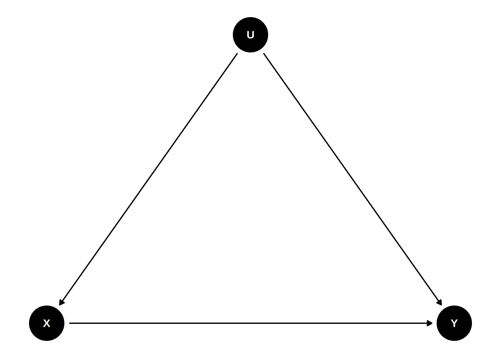
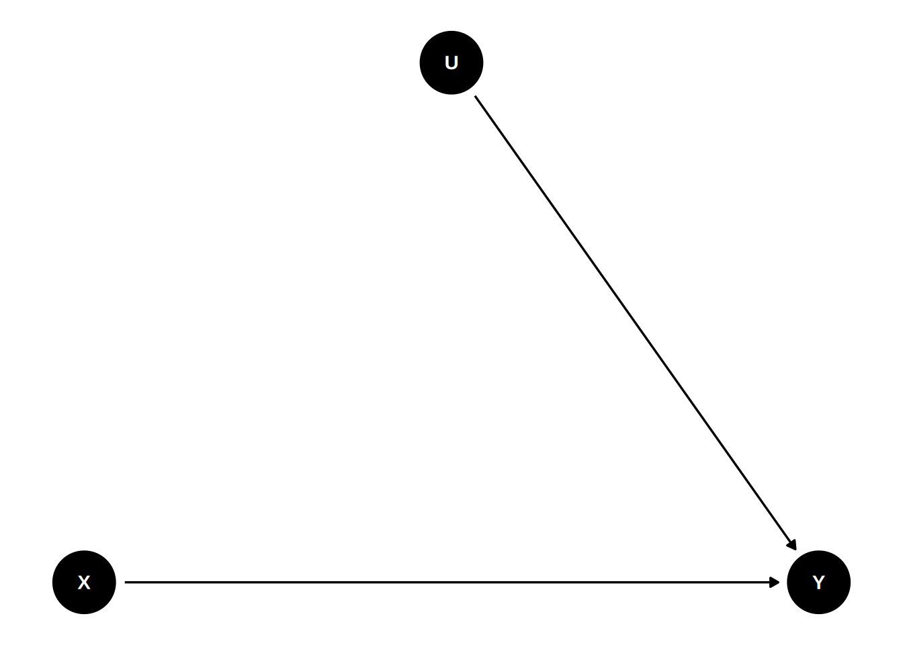
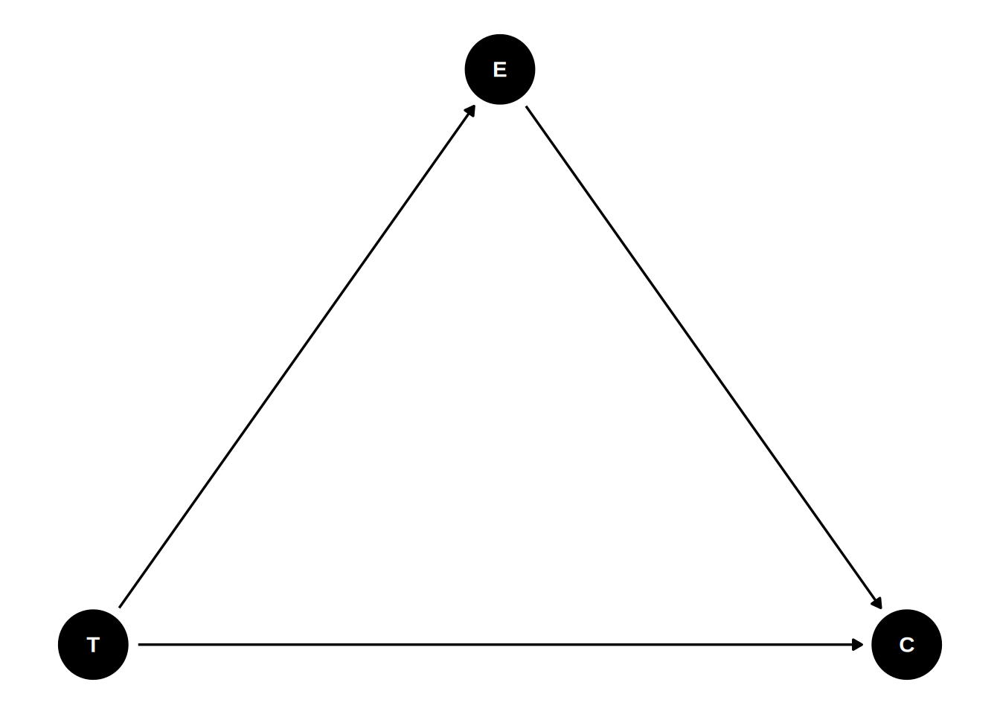
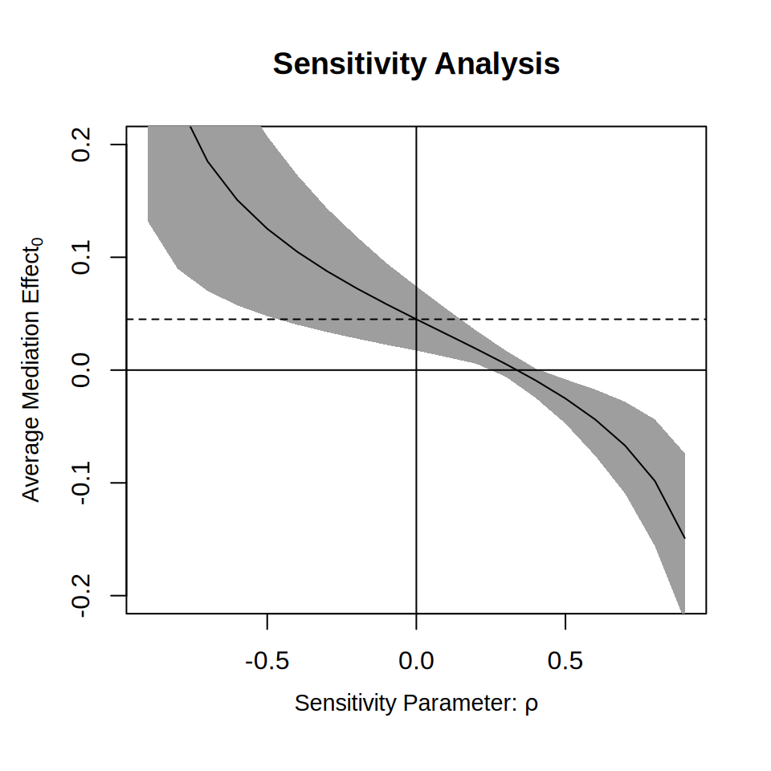
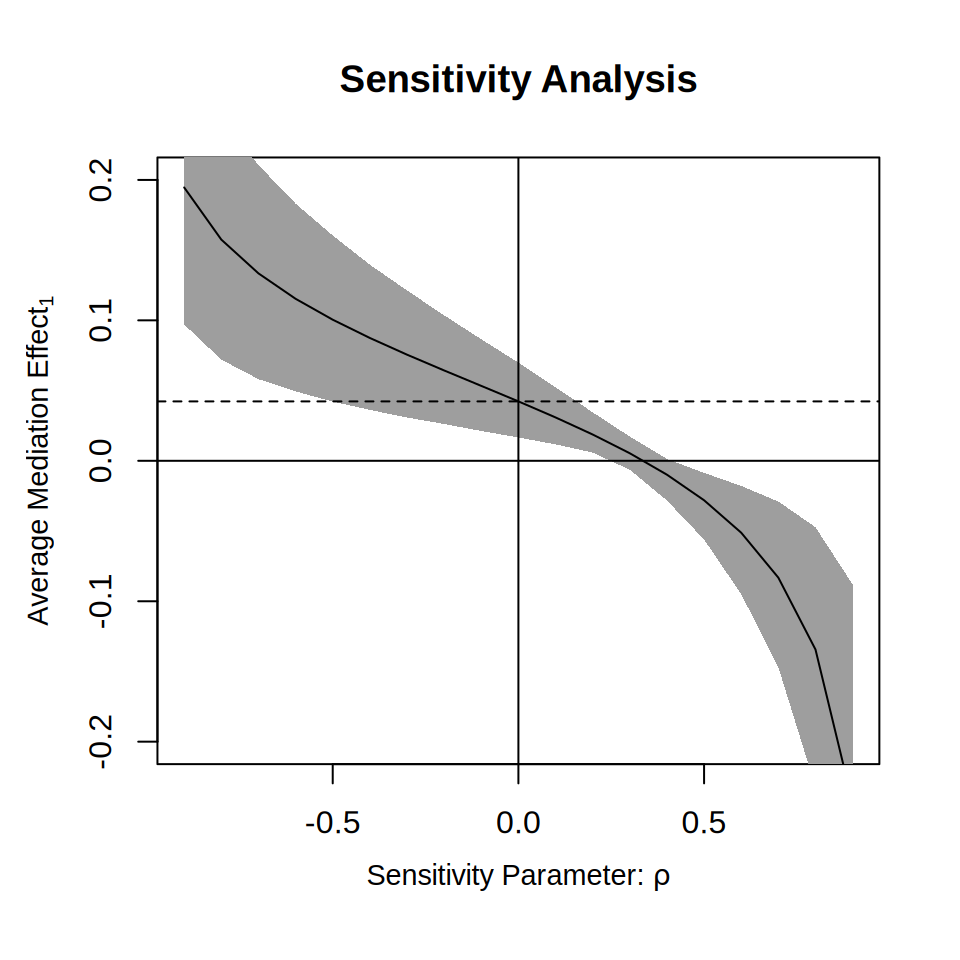

Mediation
Data: Brader et al. (2008)
Background: Potential Outcomes
Consider a binary treatment variable \(T\) (e.g., \(T = 1\) for treatment, \(T = 0\) for control). For each individual \(i\), there are two potential outcomes:
- \(Y_i(1)\): The outcome if individual \(i\) receives the treatment.
- \(Y_i(0)\): The outcome if individual \(i\) does not receive the treatment.
The causal effect of the treatment for individual \(i\) is the difference \(Y_i(1) - Y_i(0)\). However, in reality, we can only observe one of these outcomes for any given person (the Fundamental Problem of Causal Inference). If person \(i\) is treated, we observe \(Y_i(1)\) but \(Y_i(0)\) becomes counterfactual (what would have happened).
Start with a hypothetical example where we can see both potential outcomes:
| ID | y0 | y1 | T | Y_obs |
|---|---|---|---|---|
| 1 | 70 | 80 | 1 | 80 |
| 2 | 80 | 72 | 0 | 80 |
| 3 | 75 | 65 | 0 | 75 |
| 4 | 90 | 88 | 0 | 90 |
| 5 | 85 | 88 | 1 | 88 |
| 6 | 82 | 79 | 0 | 82 |
| 7 | 95 | 100 | 1 | 100 |
| 8 | 78 | 78 | 0 | 78 |
If we could observe both, we could calculate the Average Treatment Effect (ATE):
\[ ATE = E[Y(1) - Y(0)] \]
However, if we just compare the observed means of the treated and untreated groups (the Naive Comparison):
\[ E[Y | T = 1] - E[Y | T = 0] \]
This naive estimate is often biased because people who choose (or are selected for) the treatment might be systematically different from those who do not (selection bias). For example, if those who would benefit most from a drug are the ones who take it, the naive comparison overestimates the drug’s effectiveness for the general population.
Randomization solves this by ensuring that the treatment assignment \(T\) is independent of the potential outcomes (\(Y(1), Y(0)\)). In other words, the treated group and the control group are comparable on average.
Example Data
We’ll use the framing data set from the mediation package. The data were analyzed in a report in the American Journal of Political Science. The study examined whether “news about the costs of immigration boosts white opposition” (p. 959).
Summary Statistics
data(framing, package = "mediation")
# Subtract the `emo` variable by 3 so that it starts from 0-9
framing$emo <- framing$emo - 3
# Quick summary of selected variables
framing |>
dplyr::select(tone, emo, cong_mesg) |>
datasummary_skim()| Unique | Missing Pct. | Mean | SD | Min | Median | Max | Histogram | |
|---|---|---|---|---|---|---|---|---|
| tone | 2 | 0 | 0.5 | 0.5 | 0.0 | 1.0 | 1.0 | ![](data:image/png;base64,%20iVBORw0KGgoAAAANSUhEUgAABLAAAAGQCAMAAACJa2lsAAAAP1BMVEUAAAAzMzNAQEBCQkJRUVFSUlJWVlZcXFxjY2NqampxcXF3d3eIiIi7u7u8vLy+vr7Dw8PIyMjLy8vMzMz////1TW2vAAAITElEQVR4nO3US24YRxQEQdqy9aVFkfL9z+p17UxAbGUTERd4M4OpfPgX4BIPv/sBAP4vwQKuIVjANQQLuIZgAdcQLOAaggVcQ7CAawgWcA3BAq4hWMA1BAu4hmAB1xAsYDx+O+rxNc8mWMB4OOxVz/ZWLw3cSbCAawgWcA3BAq4hWMA1BAu4hmAB1xAs4BqCBVxDsIBrCBZwDcECrvFugvXnH0d9eN1nBn6FdxOs8osAv0Z554IFjPLOBQsY5Z0LFjDKOxcsYJR3LljAKO9csIBR3rlgAaO8c8ECRnnnggWM8s4FCxjlnQsWMMo7FyxglHcuWMAo71ywgFHeuWABo7xzwQJGeeeCBYzyzgULGOWdCxYwyjsXLGCUdy5YwCjvXLCAUd65YAGjvHPBAkZ554IFjPLOBQsY5Z0LFjDKOxcsYJR3LljAKO9csIBR3rlgAaO8c8ECRnnnggWM8s4FCxjlnQsWMMo7FyxglHcuWMAo71ywgFHeuWABo7xzwQJGeeeCBYzyzgULGOWdCxYwyjsXLGCUdy5YwCjvXLCAUd65YAGjvHPBAkZ554IFjPLOBQsY5Z0LFjDKOxcsYJR3LljAKO9csIBR3rlgAaO8c8ECRnnnggWM8s4FCxjlnQsWMMo7FyxglHcuWMAo71ywgFHeuWABo7xzwQJGeeeCBYzyzgULGOWdCxYwyjsXLGCUdy5YwCjvXLCAUd65YAGjvHPBAkZ554IFjPLOBQsY5Z0LFjDKOxcsYJR3LljAKO9csIBR3rlgAaO8c8ECRnnnggWM8s4FCxjlnQsWMMo7FyxglHcuWMAo71ywgFHeuWABo7xzwQJGeeeCBYzyzgULGOWdCxYwyjsXLGCUdy5YwCjvXLCAUd65YAGjvHPBAkZ554IFjPLOBQsY5Z0LFjDKOxcsYJR3LljAKO9csIBR3rlgAaO8c8ECRnnnggWM8s4FCxjlnQsWMMo7FyxglHcuWMAo71ywgFHeuWABo7xzwQJGeeeCBYzyzgULGOWdCxYwyjsXLGCUdy5YwCjvXLCAUd65YAGjvHPBAkZ554IFjPLOBQsY5Z0LFjDKOxcsYJR3LljAKO9csIBR3rlgAaO8c8ECRnnnggWM8s4FCxjlnQsWMMo7FyxglHcuWMAo71ywgFHeuWABo7xzwQJGeeeCBYzyzgULGOWdCxYwyjsXLGCUdy5YwCjvXLCAUd65YAGjvHPBAkZ554IFjPLOBQsY5Z0LFjDKOxcsYJR3LljAKO9csIBR3rlgAaO8c8ECRnnnggWM8s4FCxjlnQsWMMo7FyxglHcuWMAo71ywgFHeuWABo7xzwQJGeeeCBYzyzgULGOWdCxYwyjsXLGCUdy5YwCjvXLCAUd65YAGjvHPBAkZ554IFjPLOBQsY5Z0LFjDKOxcsYJR3LljAKO9csIBR3rlgAaO8c8ECRnnnggWM8s4FCxjlnQsWMMo7FyxglHcuWMAo71ywgFHeuWABo7xzwQJGeeeCBYzyzgULGOWdCxYwyjsXLGCUdy5YwCjvXLCAUd65YAGjvHPBAkZ554IFjPLOBQsY5Z0LFjDKOxcsYJR3LljAKO9csIBR3rlgAaO8c8ECRnnnggWM8s4FCxjlnQsWMMo7FyxglHcuWMAo71ywgFHeuWABo7xzwQJGeeeCBYzyzgULGOWdCxYwyjsXLGCUdy5YwCjvXLCAUd65YAGjvHPBAkZ554IFjPLOBQsY5Z0LFjDKOxcsYJR3LljAKO9csIBR3rlgAaO8c8ECRnnnggWM8s4FCxjlnQsWMMo7FyxglHcuWMAo71ywgFHeuWABo7xzwQJGeeeCBYzyzgULGOWdCxYwyjsXLGCUdy5YwCjvXLCAUd65YAGjvHPBAkZ554IFjPLOBQsY5Z0LFjDKOxcsYJR3LljAKO9csIBR3rlgAaO8c8ECRnnnggWM8s4FCxjlnQsWMMo7FyxglHcuWMAo71ywgFHeuWABo7xzwQJGeeeCBYzyzgULGOWdCxYwyjsXLGCUdy5YwCjvXLCAUd65YAGjvHPBAkZ554IFjPLOBQsY5Z0LFjDKOxcsYJR3LljAKO9csIBR3rlgAaO8c8ECRnnnggWM8s4FCxjlnQsWMMo7FyxglHcuWMAo71ywgFHeuWABo7xzwQJGeeeCBYzyzgULGOWdCxYwyjsXLGCUdy5YwCjvXLCAUd65YAGjvHPBAkZ554IFjPLOBQsY5Z0LFjDKOxcsYJR3LljAKO9csIBR3rlgAaO8c8ECRnnnggWM8s4FCxjlnQsWMMo7FyxglHcuWMAo71ywgFHeuWABo7xzwQJGeeeCBYzyzgULGOWdCxYwyjsXLGCUdy5YwCjvXLCAUd65YAGjvHPBAkZ554IFjPLOBQsY5Z0LFjDKOxcsYJR3LljAKO9csIBR3rlgAaO8c8ECRnnnggWM8s4FCxjlnQsWMMo7FyxglHcuWMAo71ywgFHeuWABo7xzwQJGeeeCBYzyzgULGOWdCxYwyjsXLGCUdy5YwCjvXLCAUd65YAGjvHPBAkZ554IFjPLOBQsY5Z0LFjDKOxcsYJR3LljAKO9csIBR3rlgAaO8c8ECRnnnggWM8s4FCxjlnQsWMMo7FyxglHcuWMAo71ywgFHeuWABo7xzwQJGeeeCBYzyzgULGOWdp4P186h/zp77/nL03NPz0XM/fhw99/x09NzL96PnTv+ap3f+ZsF6/HbUX+/63MevR899+nL03OfPR899+XT03NePR8+d/jX/Pnvu8c2CBfA7CRZwDcECriFYwDUEC7iGYAHXECzgGoIFXEOwgGsIFnANwQKuIVjANQQLuIZgAdf4D6tQe2wuPzucAAAAAElFTkSuQmCC) |
| emo | 10 | 0 | 4.0 | 2.8 | 0.0 | 4.0 | 9.0 | ![](data:image/png;base64,%20iVBORw0KGgoAAAANSUhEUgAABLAAAAGQCAMAAACJa2lsAAAAeFBMVEUAAAArKytERERGRkZISEhJSUlMTExPT09TU1NVVVVXV1daWlpcXFxeXl5paWlubm5xcXFzc3N1dXV3d3eIiIiZmZmoqKisrKy4uLi7u7vBwcHMzMzOzs7Y2Njg4ODk5OTl5eXu7u729vb4+Pj5+fn7+/v+/v7////gxi2aAAAHOElEQVR4nO3UWbIVVRBAUewBkUZQsRfb+c/Q3/dRFemN4FK5jbUmkCczqvajfwAiHl39AID/SrCADMECMgQLyBAsIEOwgAzBAjIEC8gQLCBDsIAMwQIyBAvIECwg46ZgvXl9nV/udQEg46ZgPbrQ23tdAMgQLCBDsIAMwQIyBAvIECwgQ7CADMECMgQLyBAsIEOwgAzBAjIEC8gQLCBDsIAMwQIyBAvIECwgQ7CADMECMgQLyBAsIEOwgAzBAjIEC8gQLCBDsIAMwQIyBAvIECwgQ7CADMECMgQLyBAsIEOwgAzBAjIEC8gQLCBDsIAMwQIyBAvIECwgQ7CADMECMgQLyBAsIEOwgAzBAjIEC8gQLCBDsIAMwQIyBAvIECwgQ7CADMECMgQLyBAsIEOwgAzBAjIEC8gQLCBDsIAMwQIyBAvIECwgQ7CADMECMgQLyBAsIEOwgAzBAjIEC8gQLCBDsIAMwQIyBAvIECwgQ7CADMECMgQLyBAsIEOwgAzBAjIEC8gQLCBDsIAMwQIyBAvIECwgQ7CADMECMgQLyBAsIEOwgAzBAjIEC8gQLCBDsIAMwQIyBAvIECwgQ7CADMECMgQLyBAsIEOwgAzBAjIEC8gQLCBDsIAMwQIyBAvIECwgQ7CADMECMgQLyBAsIEOwgAzBAjIEC8gQLCBDsIAMwQIyBAvIECwgQ7CADMECMgQLyBAsIEOwgAzBAjIEC8gQLCBDsIAMwQIyBAvIECwgQ7CAjEywvnt3md/vdfzZn9dt/e6P69aGE5lgXejTex1/9vWFa3913dpwQrBmH9/r+LOXF6795XVrwwnBmgkWLCFYM8GCJQRrJliwhGDNBAuWEKyZYMESgjUTLFhCsGaCBUsI1kywYAnBmgkWLCFYM8GCJQRrJliwhGDNBAuWEKyZYMESgjUTLFhCsGaCBUsI1kywYAnBmgkWLCFYM8GCJQRrJliwhGDNBAuWEKyZYMESgjUTLFhCsGaCBUsI1kywYAnBmgkWLCFYM8GCJQRrJliwhGDNBAuWEKyZYMESgjUTLFhCsGaCBUsI1kywYAnBmgkWLCFYM8GCJQRrJliwhGDNBAuWEKyZYMESgjUTLFhCsGaCBUsI1kywYAnBmgkWLCFYM8GCJQRr9tE3l/nkwrUFi30EixOCxT6CxQnBYh/B4oRgsY9gcUKw2EewOCFY7CNYnBAs9hEsTggW+wgWJwSLfQSLE4LFPoLFCcFiH8HihGCxj2BxQrDYR7A4IVjsI1icECz2ESxOCBb7CBYnBIt9BIsTgsU+gsUJwWIfweLEZz9e5qe/7/W9EydYLPTbvb534gSLhX691/dOnGCxkGBxTLBYSLA4JlgsJFgcEywWEiyOCRYLCRbHBIuFBItjgsVCgsUxwWIhweKYYLGQYHFMsFhIsDgmWCwkWBwTLBYSLI4JFgsJFscEi4UEi2OCxUKCxTHBYiHB4phgsZBgcUywWEiwOCZYLCRYHBMsFhIsjgkWCwkWxwSLhQSLY4LFQoLFMcFioc+fXObbe/1qq/183cGfPL/loYIFD7287U//n3h75clveahgwUOC9cHd8lDBgocE64O75aGCBQ8J1gd3y0MFCx4SrA/ulocKFjz0+PvL/HBbZN4nwQJu9NdtlXmPBAu4kWCNBAu2EKyRYMEWgjUSLNhCsEaCBVsI1kiwYAvBGgkWbCFYI8GCLQRrJFiwhWCNBAu2EKyRYMEWgjUSLNhCsEaCBVsI1kiwYAvBGgkWbCFYI8GCLQRrJFiwhWCNBAu2EKyRYMEWgjUSLNhCsEaCBVsI1kiwYAvBGgkWbCFYI8GCLQRrJFiwhWCNBAu2EKyRYMEWgjUSLNhCsEaCBVsI1kiwYAvBGgkWbCFYI8GCLQRrJFiwhWCNBAu2EKyRYMEWgjUSLNhCsEaCBVsI1kiwgEsJFpAhWECGYAEZggVkCBaQIVhAhmABGYIFZAgWkCFYQIZgARmCBWQIFpAhWECGYAEZggVkCBaQIVhAhmABGYIFZAgWkCFYQIZgARmCBWQIFpAhWECGYAEZggVkCBaQIVhAhmABGYIFZAgWkCFYQIZgARmCBWQIFpAhWECGYAEZggVkCBaQIVhAhmABGYIFZAgWkCFYQIZgARmCBWQIFpAhWECGYAEZggVkCBaQIVhAhmABGYIFZAgWkCFYQIZgARmCBWQIFpAhWECGYAEZggVkCBaQIVhAhmABGYIFZAgWkCFYQIZgARmCBWQIFpAhWECGYAEZggVkCBaQIVhAhmABGYIFZAgWkCFYQIZgARmCBWQIFpAhWECGYAEZggVkCBaQIVhAhmABGYIFZAgWkCFYQIZgARl3C9ab15d59vy62V9cN/rpi8tGv3p82ejXj19dNvrF08tGX/mhPX923ew3dwsWwJUEC8gQLCBDsIAMwQIyBAvIECwgQ7CADMECMgQLyBAsIEOwgAzBAjIEC8j4F1WQmXV4zMBeAAAAAElFTkSuQmCC) |
| cong_mesg | 2 | 0 | 0.3 | 0.5 | 0.0 | 0.0 | 1.0 | ![](data:image/png;base64,%20iVBORw0KGgoAAAANSUhEUgAABLAAAAGQCAMAAACJa2lsAAAAPFBMVEUAAABRUVFSUlJWVlZcXFxjY2NqampxcXF3d3eIiIiqqqq5ubm7u7u8vLy+vr7Dw8PIyMjLy8vMzMz////qCssXAAAHIElEQVR4nO3USXIUQRREQYHGRmjk/ndlHTu06FQE5n6BX2lW8W7+AIy4+e4PAPhXggXMECxghmABMwQLmCFYwAzBAmYIFjBDsIAZggXMECxghmABMwQLmPGlYF2ejrpc69HApi8F6+awaz0a2CRYwAzBAmYIFjBDsIAZggXMECxghmABMwQLmCFYwAzBAmYIFjBDsIAZggXMECxghmABMwQLmCFYwAzBAmYIFjBDsIAZggXMECxghmABMwQLmCFYwAzBAmYIFjBDsIAZggXMECxghmABMwQLmCFYwAzBAmYIFjBDsIAZggXMECxghmABMwQLmCFYwAzBAmYIFjBDsIAZggXMECxghmABMwQLmCFYwAzBAmYIFjBDsIAZggXMECxghmABMwQLmCFYwAzBAmYIFjBDsIAZggXMECxghmABMwQLmCFYwAzBAmYIFjBDsIAZggXMECxghmABMwQLmCFYwAzBAmYIFjBDsIAZggXMECxghmABMwQLmCFYwAzBAmYIFjBDsIAZggXMECxghmABMwQLmCFYwAzBAmYIFjBDsIAZggXMECxghmABMwQLmCFYwAzBAmYIFjBDsIAZggXMECxghmABMwQLmCFYwAzBAmYIFjBDsIAZggXMECxghmABMwQLmCFYwAzBAmYIFjBDsIAZggXMECxghmABMwQLmCFYwAzBAmYIFjBDsIAZggXMECxghmABMwQLmCFYwAzBAmYIFjBDsIAZggXMECxghmABMwQLmCFYwAzBAmYIFjBDsIAZggXMECxghmABMwQLmCFYwAzBAmYIFjBDsIAZggXMECxghmABMwQLmCFYwAzBAmYIFjBDsIAZggXMECxghmABMwQLmCFYwAzBAmYIFjBDsIAZggXMECxghmABMwQLmCFYwAzBAmYIFjBDsIAZggXMECxghmABMwQLmCFYwAzBAmYIFjBDsIAZggXMECxghmABMwQLmCFYQHj+ddTzV75NsIDQvHPBAkLzzgULCM07FywgNO9csIDQvHPBAkLzzgULCM07FywgNO9csIDQvHPBAkLzzgULCM07FywgNO9csIDQvHPBAkLzzgULCM07FywgNO9csIDQvHPBAkLzzgULCM07FywgNO9csIDQvHPBAkLzzgULCM07FywgNO9csIDQvHPBAkLzzgULCM07FywgNO9csIDQvHPBAkLzzgULCM07FywgNO9csIDQvHPBAkLzzgULCM07FywgNO9csIDQvHPBAkLzzgULCM07FywgNO9csIDQvHPBAkLzzgULCM07FywgNO9csIDQvHPBAkLzzgULCM07FywgNO9csIDQvHPBAkLzzgULCM07FywgNO9csIDQvHPBAkLzzgULCM07FywgNO9csIDQvHPBAkLzzgULCM07FywgNO9csIDQvHPBAkLzzgULCM07FywgNO9csIDQvHPBAkLzzgULCM07FywgNO9csIDQvHPBAkLzzgULCM07FywgNO9csIDQvHPBAkLzzgULCM07FywgNO9csIDQvHPBAkLzzgULCM07FywgNO9csIDQvHPBAkLzzgULCM07FywgNO9csIDQvHPBAkLzzgULCM07FywgNO9csIDQvHPBAkLzzgULCM07FywgNO9csIDQvHPBAkLzzgULCM07FywgNO9csIDQvHPBAkLzzgULCM07FywgNO9csIDQvHPBAkLzzgULCM07FywgNO9csIDQvHPBAkLzzgULCM07FywgNO9csIDQvHPBAkLzzgULCM07FywgNO9csIDQvHPBAkLzzgULCM07FywgNO9csIDQvHPBAkLzzgULCM07FywgNO9csIDQvHPBAkLzzgULCM07FywgNO9csIDQvHPBAkLzzgULCM07FywgNO9csIDQvHPBAkLzzgULCM07FywgNO9csIDQvHPBAkLzzgULCM07FywgNO9csIDQvHPBAkLzzgULCM07FywgNO9csIDQvHPBAkLzzgULCM07FywgNO9csIDQvHPBAkLzzgULCM07FywgNO9csIDQvHPBAkLzzgULCM07FywgNO9csIDQvHPBAkLzzgULCM07FywgNO9csIDQvHPBAkLzzgULCM07FywgNO9csIDQvHPBAkLzzgULCM07FywgNO9csIDQvHPBAkLzzgULCM07FywgNO9csIDQvHPBAkLzzgULCM07FywgNO9csIDQvHPBAkLzzgULCM07FywgNO9csIDQvHPBAkLzzgULCM07FywgNO9csIDQvHPBAkLzzgULCM07rw7W51G/z557+Th67vX96Lm3t6Pn3l+Pnvt4OXru9K95eudXC9bl6agf//W528ej5+4ejp67vz967uHu6LnH26PnTv+aP8+eu1wtWADfSbCAGYIFzBAsYIZgATMEC5ghWMAMwQJmCBYwQ7CAGYIFzBAsYIZgATMEC5jxFx9/9ozeGKpeAAAAAElFTkSuQmCC) |
# Summary by treatment condition (`tone`)
datasummary_balance(age + income + emo + cong_mesg ~ tone, data = framing)| 0 | 1 | |||||
|---|---|---|---|---|---|---|
| Mean | Std. Dev. | Mean | Std. Dev. | Diff. in Means | Std. Error | |
| age | 48.4 | 16.0 | 47.1 | 16.0 | -1.3 | 2.0 |
| income | 11.0 | 3.9 | 10.6 | 3.9 | -0.4 | 0.5 |
| emo | 3.4 | 2.6 | 4.5 | 2.8 | 1.1 | 0.3 |
| cong_mesg | 0.3 | 0.5 | 0.4 | 0.5 | 0.0 | 0.1 |
# Correlation table
framing |>
dplyr::select(tone, emo, cong_mesg) |>
datasummary_correlation(method = "pearson")| tone | emo | cong_mesg | |
|---|---|---|---|
| tone | 1 | . | . |
| emo | .21 | 1 | . |
| cong_mesg | .05 | .37 | 1 |
Randomization Removes Incoming Paths for Treatment
Let’s consider a DAG without randomization, for the following two variables:
- X: Exposure to a negatively framed news story about immigrants
- Y: Anti-immigration political action
There are many possible confounders when we observe these two variables in data (e.g., an individual’s political affiliation and the state in which a person resides). We can represent these unobserved confounders as U, so the DAG will be something like

The magic of randomization—randomly assigning individuals to a manipulated level of X—is that it blocks the path U → X. Therefore, with randomization, the reason a person sees a negatively-framed news story about immigrants is not related to reasons that the person may have intentions for anti-immigration actions. The DAG becomes

Therefore, when randomization is successful, the path coefficient of X → Y is the causal effect of X on Y. However, randomized experiments do not always rule out all confounding. For example, suppose participants are randomly assigned to different experimental conditions, but those who disagree with the presented news story drop out. In that case, such attrition can induce a non-zero correlation between X and Y in the remaining sample.
Causal Chains
Post-Treatment Bias
Here are some key variables from the framing data set:
-
cong_mesg: binary variable indicating whether or not the participant agreed to send a letter about immigration policy to his or her member of Congress -
emo: posttest anxiety about increased immigration (0-9) -
tone: framing of news story (0 = positive, 1 = negative)
We can compare the results of two models:
-
tone→cong_mesg -
tone→cong_mesg, adjusting foremo
Which model gives us the causal effect estimate for tone? Let’s run the two models using logistic regression (glm).
We can combine the results in a table:
modelsummary(
list(`No adjustment` = m_no_adjust,
`Adjusting for feeling` = m_adjust),
fmt = 2,
exponentiate = TRUE,
statistic = "conf.int"
)| No adjustment | Adjusting for feeling | |
|---|---|---|
| (Intercept) | 0.44 | 0.14 |
| [0.30, 0.64] | [0.07, 0.24] | |
| tone | 1.24 | 0.87 |
| [0.74, 2.08] | [0.49, 1.53] | |
| emo | 1.37 | |
| [1.23, 1.53] | ||
| Num.Obs. | 265 | 265 |
| AIC | 340.2 | 305.0 |
| BIC | 347.4 | 315.7 |
| Log.Lik. | -168.102 | -149.486 |
| F | 0.683 | 16.378 |
| RMSE | 0.47 | 0.44 |
We can see that the coefficient (log odds) for tone was positive without emo, but was negative with emo. Which one should we believe? The model with emo might have better predictive power, but just because something helps predict the outcome does not make it a causal variable to control for. To repeat,
Coefficients in a predictive model are not causal effects.
And to emphasize again,
Causal inference requires causal assumptions, and these assumptions are not in the data.
So instead, we need a DAG. Given that we know emo is measured after the intervention, it seems reasonable to think that a negatively framed story about immigrants would elicit some negative emotions about increased immigration, and that emotion may prompt people to take anti-immigrant actions. Therefore, we have the following DAG:
Code

This is an example of a pipe/chain. It is a causal chain going from T(one) → E(motion) → C(ongress message). If we are interested in the causal effect of T, we should not condition on E; conditioning on E would mean comparing those who saw the negatively-framed story and those who saw the positively-framed story but had the same negative emotion towards immigrants. In other words, adjusting for E would mean taking out part of the effect of T on C through E.
As another example, think about a drug that is supposed to lower the risk of a heart attack. Imagine someone conducting a study comparing drug/no drug conditions on their probability of getting heart attacks. Should we adjust for participants’ blood pressure after the intervention? If we want to know the drug’s effect, and that the drug works by lowering blood pressure, we should not adjust for posttest blood pressure. Otherwise, we would be asking the question: Does the drug help prevent heart attacks through something other than lowering one’s blood pressure?
The latter question can be answered in mediation analysis.
Causal Mediation
In the DAG above, E is a post-treatment variable potentially influenced by T, which we call a mediator. Mediator is an important topic in causal inference, as it informs the mechanism of how a variable has a causal effect on an outcome.
One thing to be careful of is that, statistically speaking, a mediator behaves very much like a confounder, and their difference is based on causal assumptions.
Direct and Indirect Effects
In a mediation model, the effect of X on Y has two mechanisms:
- Indirect effect: X causes Y because X causes M, and M causes Y
- Direct effect: X causes Y without involving M
More specifically, the direct effect is the change in Y for one unit change in X, holding M constant. In our example, it means comparing subsets of the treatment and the control groups, under the condition that both subsets have the same level of negative emotion about increased immigration.
The indirect effect takes more effort to understand: it is the change in Y for the control group (or the treatment group) if their mediator value is set to the same level as the treatment group. In our example, it would mean comparing the control group and the counterfactual where the control group had their negative emotion changed to the same level as the treatment group.
Causal Estimands
We can formalize these definitions using potential outcomes notation. Let \(M_i(t)\) be the potential value of the mediator for person \(i\) under treatment \(t\). Let \(Y_i(t, m)\) be the potential outcome for person \(i\) under treatment \(t\) and mediator value \(m\).
Controlled Direct Effect (CDE): The effect of Treatment on Outcome if we intervene to fix the Mediator to a specific level \(m\). \[ CDE(m) = E[Y(1, m) - Y(0, m)] \]
Natural Direct Effect (NDE): The effect of Treatment on Outcome, but keeping the Mediator at the level it would have been under the control condition (\(M_0\)). \[ NDE = E[Y(1, M_0) - Y(0, M_0)] \]
Natural Indirect Effect (NIE): Also known as Average Causal Mediation Effect (ACME). The effect of changing the Mediator from what it would be under Control (\(M_0\)) to what it would be under Treatment (\(M_1\)), while keeping Treatment status constant (usually at \(T=1\) or \(T=0\)). \[ NIE = E[Y(0, M_1) - Y(0, M_0)] \]
The Total Effect decomposes into the NDE and NIE: \[ \text{Total Effect} = NDE + NIE \]
Using the mediation Package
The mediation package allows for the estimation of causal mediation effects using the potential outcomes framework. It requires two models:
-
Mediator Model: Predicting the mediator (
emo) from the treatment (tone) and optional covariates. -
Outcome Model: Predicting the outcome (
cong_mesg) from the treatment (tone) AND the mediator (emo).
We then use the mediate() function to estimate the Average Causal Mediation Effect (ACME) (also known as the indirect effect) and the Average Direct Effect (ADE). This uses simulation (Quasi-Bayesian Monte Carlo) to obtain confidence intervals.
Causal Mediation Analysis
Quasi-Bayesian Confidence Intervals
Estimate 95% CI Lower 95% CI Upper p-value
ACME (control) 0.070632 0.027559 0.119185 0.001001 **
ACME (treated) 0.068200 0.027015 0.114051 0.001001 **
ADE (control) -0.027040 -0.131497 0.075207 0.605303
ADE (treated) -0.029472 -0.143459 0.081754 0.605303
Total Effect 0.041160 -0.073421 0.148724 0.484242
Prop. Mediated (control) 0.905201 -15.389476 13.529789 0.485243
Prop. Mediated (treated) 0.914232 -14.365956 12.304396 0.485243
ACME (average) 0.069416 0.027407 0.115206 0.001001 **
ADE (average) -0.028256 -0.136730 0.079564 0.605303
Prop. Mediated (average) 0.909717 -15.002854 13.048048 0.485243
---
Signif. codes: 0 '***' 0.001 '**' 0.01 '*' 0.05 '.' 0.1 ' ' 1
Sample Size Used: 265
Simulations: 1999 The output gives us:
- ACME (Average Causal Mediation Effect): The part of the effect of Tone on Congress Message that goes through Emotion.
- ADE (Average Direct Effect): The part of the effect that does not go through Emotion.
- Total Effect: The sum of ACME and ADE.
- Prop. Mediated: The proportion of the total effect that is mediated.
Sensitivity Analysis
The “Sequential Ignorability” assumption (no unmeasured confounding) is strong and untestable. However, we can perform a sensitivity analysis to see how robust our results are to potential violations of this assumption. Specifically, we ask: how highly correlated (\(\rho\)) would the error terms of the mediator and outcome models need to be for the ACME to vanish (i.e., cross zero)? A non-zero \(\rho\) implies the existence of unmeasured confounders affecting both \(M\) and \(Y\).
sens_out <- medsens(med_out, rho.by = 0.1, effect.type = "indirect", sims = 1999)Warning in rho^2 * (1 - r.sq.m) * (1 - r.sq.y): Recycling array of length 1 in vector-array arithmetic is deprecated.
Use c() or as.vector() instead.Warning in err.cr.d^2 * (1 - r.sq.m) * (1 - r.sq.y): Recycling array of length 1 in vector-array arithmetic is deprecated.
Use c() or as.vector() instead.
Mediation Sensitivity Analysis: Average Mediation Effect
Sensitivity Region: ACME for Control Group
Rho ACME(control) 95% CI Lower 95% CI Upper R^2_M*R^2_Y* R^2_M~R^2_Y~
[1,] 0.3 0.0053 -0.0059 0.0173 0.09 0.0677
[2,] 0.4 -0.0092 -0.0246 0.0013 0.16 0.1204
Rho at which ACME for Control Group = 0: 0.3
R^2_M*R^2_Y* at which ACME for Control Group = 0: 0.09
R^2_M~R^2_Y~ at which ACME for Control Group = 0: 0.0677
Sensitivity Region: ACME for Treatment Group
Rho ACME(treated) 95% CI Lower 95% CI Upper R^2_M*R^2_Y* R^2_M~R^2_Y~
[1,] 0.3 0.0054 -0.0064 0.0172 0.09 0.0677
[2,] 0.4 -0.0099 -0.0283 0.0013 0.16 0.1204
Rho at which ACME for Treatment Group = 0: 0.3
R^2_M*R^2_Y* at which ACME for Treatment Group = 0: 0.09
R^2_M~R^2_Y~ at which ACME for Treatment Group = 0: 0.0677 

The plot shows the estimated ACME (solid line) and its confidence intervals (dashed lines) as a function of the sensitivity parameter \(\rho\). If the confidence interval includes zero only at high values of \(\rho\), the results are considered robust.
Using lavaan
We can also estimate mediation models using Path Analysis in lavaan. Because the outcome cong_mesg is binary, we should treat it as an ordered categorical variable. lavaan typically uses the DWLS (Diagonally Weighted Least Squares) estimator for such data.
Also, because the product of coefficients (used for the indirect effect) is rarely normally distributed, we use Monte Carlo confidence intervals. This approach simulates the sampling distribution of the indirect effect by drawing repeatedly from the multivariate normal distribution of the estimated parameter covariance matrix. Note that when defining the product \(a \times b\), the coefficients are on the underlying latent response scale (probit link by default), so interpretability will be different from the probability scale used in mediate().
model_med <- '
# a path
emo ~ a * tone
# b path and c prime path
cong_mesg ~ b * emo + c_prime * tone
# Indirect effect (a * b)
ab := a * b
# Total effect
total := c_prime + (a * b)
'
# Estimate using DWLS
fit_med <- sem(model_med, data = framing, ordered = c("cong_mesg"),
estimator = "DWLS")
# Monte Carlo confidence intervals (20,000 draws)
set.seed(1234)
mc_ci <- semTools::monteCarloCI(fit_med, nRep = 20000)
mc_ci[c("indirect", "total"), ] |>
knitr::kable(digits = 3)| est | ci.lower | ci.upper | |
|---|---|---|---|
| NA | NA | NA | NA |
| total | 0.132 | -0.179 | 0.446 |
Summary
- Direct Effect: Effect of \(X\) on \(Y\) holding \(M\) constant.
- Indirect Effect: Effect of \(X\) on \(Y\) through \(M\).
- Assumptions: Mediation analysis relies on strong causal assumptions (no unmeasured confounding between \(M\) and \(Y\)), which randomization of \(X\) alone does not guarantee.
References
Kline, R. B. (2023). Principles and practice of structural equation modeling (5th ed.). Guilford Press.